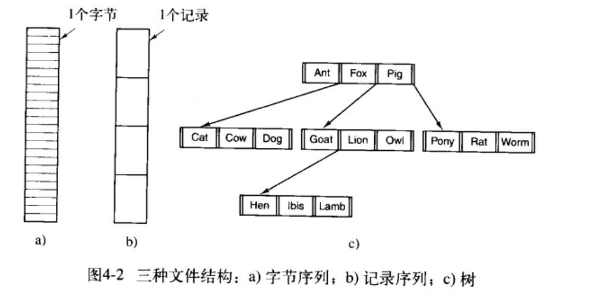
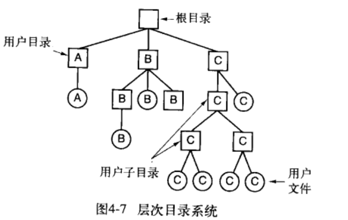

一种抽象机制，提供一种在磁盘上保留信息而且方便以后读取的方法。使用户不需要了解存储信息的方法、位置和十几次盘工作方式等有关细节
文件的具体命名规则在各个系统中不同，所有现代操作系统都允许用1~8个字母组成的字符串作为合法的文件名 扩展名用圆点.分隔
常用的三种构造方式 
- 字节序列：把文件看成字节序列为操作系统提供了最大的灵活性，用户程序可以向文件中家人任何内容，并以任何方便的形式命名。所有UNIX、MS-DOS及Windows都采用这种文件模型。
- 记录序列：文件是具有固定长度记录的序列，每个记录都有其内部结构。几十年前，为了适应行式打印机，固定有132列宽，如今已经不用了
- 树：文件有一棵记录树构成，每个记录并不具有同样的长度，而记录的固定位置上有一个key字段，这棵树按key字段进行排序，从而可以对特定key进行快速查找
-
普通文件：包含用户的信息
- ASCII文件：由多行正文组成，方便显示、打印和编辑
- 二进制文件：有一定的内部结构，打印出来无法理解，给操作系统执行
- 目录：管理文件系统结构的系统文件
- UNIX中还有字符特殊文件和块特殊文件
- 顺序存取：早期存储介质是磁带时使用
- 随机存取：存储介质是磁盘时，可以以任何次序读取其中字节或记录
- 文件属性（元数据）：文件相关的信息，如创建日期，文件大小等
对于文件的存储和检索，不同系统提供了不同操作，以下是常用的系统调用
- create 创建文件，并设置文件的一些属性
- delete 删除文件
- open 使用文件前，必须先打开文件，open调用把文件属性和磁盘地址表装入内存，便于后续调用的快速存取
- close 存取结束后，不再需要文件属性和磁盘地址，close调用关闭文件以释放内部表空间，磁盘以块为单位写入，关闭文件时，写入该文件的最后一块，即使这个块还没有满
- read 在文件中读取数据，一般独处数据来自文件的当前位置，调用者需指明要读取的数据，并提供存放这些数据的缓冲区
- write 向文件写数据，一般从文件当前位置开始，如果是文件末尾，文件长度增加，如果在文件中间，现有数据被覆盖，并且永远丢失
- append write的限制形式，只能在文件末尾加数据
- seek 对于随机存取文件，seek把当前位置指针指向文件中特定位置，sekk调用结束后，就可以从该位置开始读写数据
- get attributes 读取文件属性
- set attributes 设置文件属性
- rename 重命名
只有一个目录，已废弃
一个目录树，用户可以创建任意数量的子目录，几乎所有现代文件系统都是用这个方式组织的 
由根目录到文件的路径组成
和工作目录（也称当前目录）一起使用
- create 创建目录
- delete 删除目录
- opendir 目录内容可被读取，eg列出目录中全部文件，程序必须先打开该目录，然后读其中全部文件的文件名
- closedir 读目录结束后，关闭目录以释放内部表空间
- redaddir 返回打开目录的下一个目录项
- rename 重命名
- link 连接技术允许在多个目录中出现同一个文件，制定一个存在的文件和一个路径名，建立从该文件到路径所指名字的连接（硬连接hard link）。增加了该文件的i-node计数器的计数（记录含有该文件的目录项数目）
- unlink 删除目录项。如果被解除连接的文件只出现在一个目录中，则将它从文件系统删除，如果出现在多个目录中，则只删除制定路径名的连接。delete系统调用实际上就是unlink
文件系统存放在磁盘上，划分为一个或多个分区，每个分区有一个独立的文件系统。
- 主引导记录：Master Boot Record，MBR 磁盘的0号扇区，用来引导计算机
- 分区表：MBR的结尾，给出了每个分区的起始和结束地址
在计算机被引导时，BIOS读入并执行MBR。MBR确定活动分区，读入它的第一个块，称为引导块，并执行。引导块中的程序将装载该分区中的操作系统，即使它不含有一个可启动的操作系统
文件系统布局
 其中超级块包含文件系统的所有关键参数，空闲块可以用位图或指针列表的形式给出
其中超级块包含文件系统的所有关键参数，空闲块可以用位图或指针列表的形式给出
- 连续分配：随机存取快，但有磁盘碎片
- 链表分配：磁盘利用率高，但随机存取太慢
- 在内存中采用表的链表分配：取出每个磁盘块的指针字放在内存的一个表中，缺点是对于大磁盘占用过多内存
- i节点：为每个文件赋予一个称为index-node的数据结构，列出了文件属性和文件块的磁盘地址。只有在对应文件打开时，其i节点才在内存中